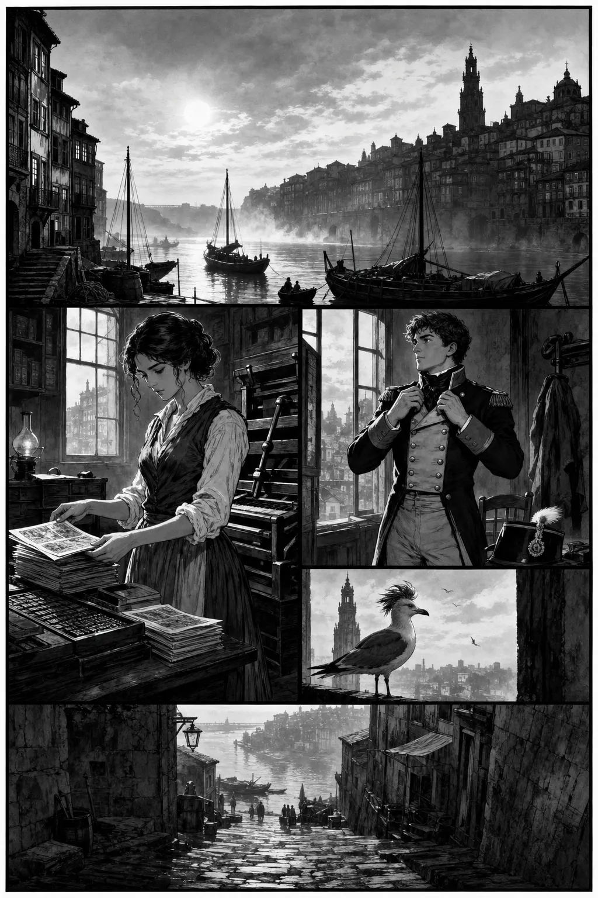
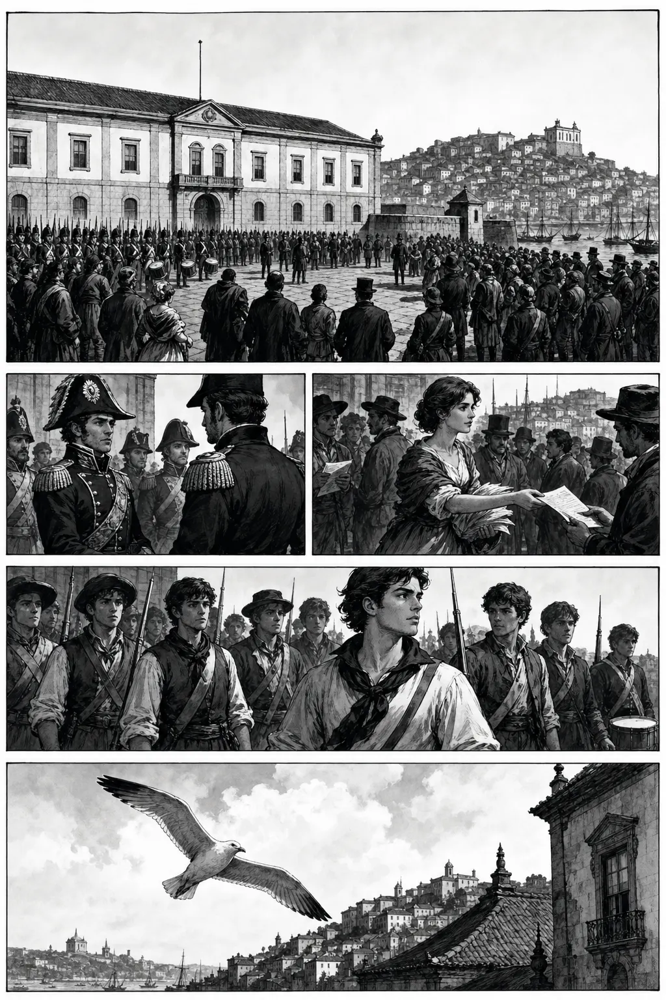
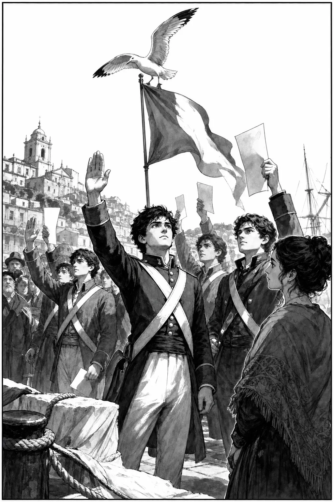
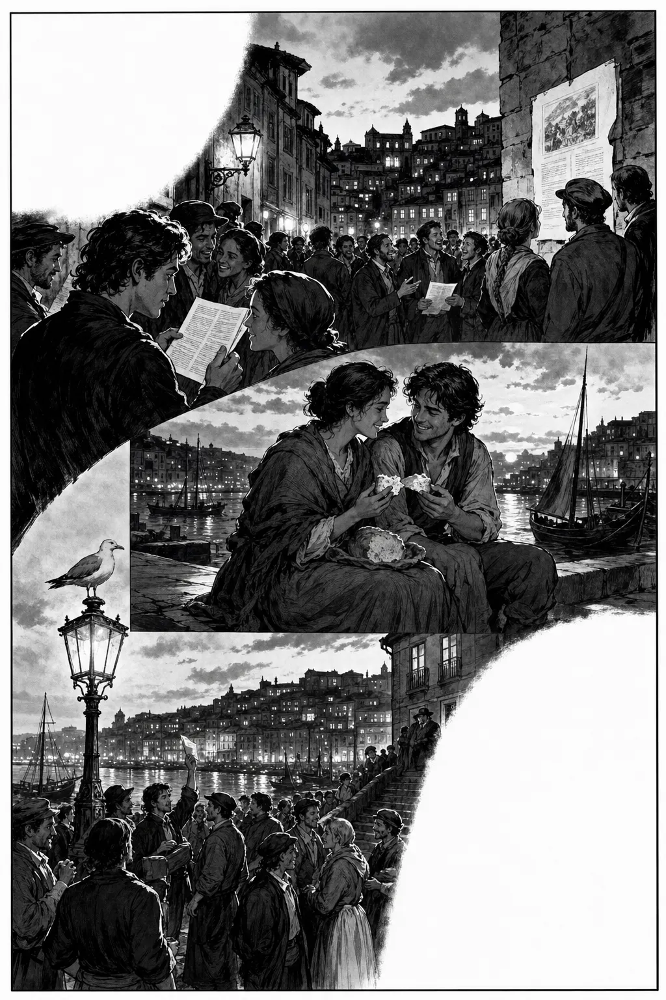
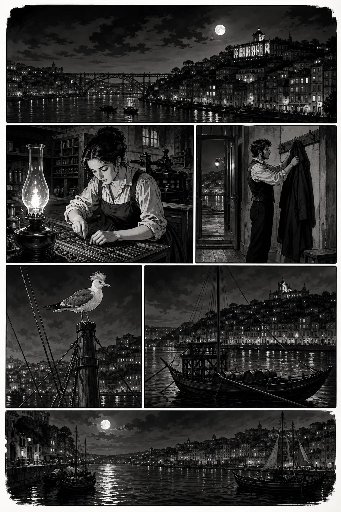

Revolução Liberal · 1/5
Setup

GaivotaO Porto acorda cedo. Hoje… mais cedo ainda.
RosaMiguel, isto é só papel?
MiguelNão. Isto é a palavra… a caminho da praça.
Revolução Liberal · 2/5
Rising action

MiguelDizem que o rei está longe. Nós… aqui.
RosaEntão a constituição começa aqui.
GaivotaO rio ouve. A cidade responde.
Revolução Liberal · 3/5
Turning point

OficialPela nação. Pela lei.
MiguelJuramos!
GaivotaUm juramento… mais alto que o sino.
Revolução Liberal · 4/5
Consequence

RosaMudámos alguma coisa?
MiguelAbrimos a porta. O resto… caminha.
GaivotaO absolutismo… sentiu o Porto.
Revolução Liberal · 5/5
Resolution

RosaAcabou a revolução?
MiguelAcabou este dia. A liberdade… ainda se escreve.
GaivotaGuardo este cais. Portugal pediu lei.
Study pack
100 words · PT → EN
Study pack — Revolução Liberal
Read the comic once for story, once for words. Say each line aloud. Prefer Portuguese answers in the quiz.
Glossary (100)
liberalliberal
constituiçãoconstitution
cortesCortes (parliament)
juraoath
absolutismoabsolutism
brasilBrazil
manifestomanifesto
proclamaçãoproclamation
milíciamilitia
cadetecadet
comerciantemerchant
tipógrafoprinter
jornalnewspaper
panfletopamphlet
ribeiraRibeira (Porto)
douroDouro
clérigosClérigos
discursospeech
direitosrights
pátriahomeland
cidadãocitizen
votovote
leilaw
assembleiaassembly
deputadodeputy
reformareform
uniãounion
hinoanthem
prensapress
tintaink
papelpaper
assinarto sign
jurarto swear
proclamarto proclaim
exigirto demand
calarto be silent
mulherwoman
homemman
jovemyoung person
vinho-do-portoport wine
barcariver boat
caisquay
névoamist
conventoconvent
caoschaos
palavraword
conflitoconflict
exílioexile
corteroyal court
ministérioministry
ministrominister
generalgeneral
armaweapon
pólvoragunpowder
18201820
setembroSeptember
outubroOctober
regênciaregency
beresfordBeresford
inglesesthe English
ocupaçãooccupation
dívidadebt
impostotax
comércio-livrefree trade
monopóliomonopoly
colóniacolony
metrópolemetropole
independência-brasilBrazilian independence (context)
volta-do-reiking's return
praça-da-constituiçãoConstitution Square
campo-de-santo-ovidioSanto Ovídio field
regimentoregiment
guarniçãogarrison
sentinelasentinel
alvorada-militarmilitary reveille
toque-de-reunirassembly call
oradorspeaker
multidão-portuensePorto crowd
portuensePorto native
provínciaprovince
reino-unidoUnited Kingdom (Portugal-Brazil)
decretodecrect
petiçãopetition
liberdade-de-imprensapress freedom
prisãoprison
amnistiaamnesty
traiçãotreason
deverduty
igualdadeequality
fraternidadefraternity
progressoprogress
tradiçãotradition
modernidademodernity
fábricafactory
oficinaworkshop
mercado-negroblack market
pão-durohard bread
fome-urbanaurban hunger
saláriowage
grevestrike
Comprehension (answer in PT)
- Onde começa a revolução nesta história?
- Quem são Rosa e Miguel?
- O que juram na praça?
- O que significa “abrimos a porta”?
- Como acaba a história?
Cultural note
In 1820 Porto sparked Portugal’s Liberal Revolution: officers, merchants, and citizens pressed for a constitution and Cortes while King João VI was still in Brazil. Print and public oaths mattered as much as muskets. The comic stays human-scale — a sister who prints, a brother who swears, and a city that asked for written law.
Next
Free Ep.01: O Terramoto (1755) · Hub: series page · More paid episodes on Gumroad